Come si ottiene un indirizzo IP?
questa domanda essendo troppo generica si divide in 2 sotto-domande:
- come fa un host a ottenere un suo recapito IP?
- come fa a sapere il suo identificativo all’interno di una rete?
- Come fa una rete a ottenere l’indirizzo IP (la parte dell’indirizzo relativa alla rete)?
Rispondiamo alla prima
l’host può ottenerlo:
- manualmente
- viene messo nel file di configurazione sysadmin in modo statico
- è ormai inutilizzata questa cosa perché ogni nuovo dispositivo dovrebbe essere configurato manualmente
- viene messo nel file di configurazione sysadmin in modo statico
- dinamicamente
- con il DHCP(Dynamic Host Configuration Protocol)
- permette a un host di ottenere un indirizzo IP in modo automatico
- è decisamente più facile usarlo “plug-and-play”
- con il DHCP(Dynamic Host Configuration Protocol)
spiegazione migliore sul DHCP
- appena l’host si unisce alla rete deve ottenere un indirizzo IP dinamico
- dinamico perché ogni volta che si collega varia
- L’indirizzo non è assegnato per sempre: può essere rinnovato o rilasciato, così da riutilizzare gli IP in modo efficiente.
- Questo sistema è ideale per utenti mobili che entrano ed escono spesso dalla rete, come smartphone e portatili.
Tuttavia, poiché ogni accesso può dare un IP diverso, non garantisce la stabilità di una connessione TCP attiva (che dipende dall’indirizzo IP).
Dove è posizionato?

Il DHCP in 4 passi
- DHCP Discover (opzionale):
L’host invia un messaggio broadcast sulla rete per scoprire se ci sono server DHCP disponibili. - DHCP Offer (opzionale):
Un server DHCP risponde, proponendo un indirizzo IP disponibile da assegnare. - DHCP Request:
L’host richiede formalmente quell’indirizzo IP, indicando che accetta l’offerta. - DHCP Ack:
Il server DHCP conferma l’assegnazione, e l’host può iniziare a usare quell’IP. 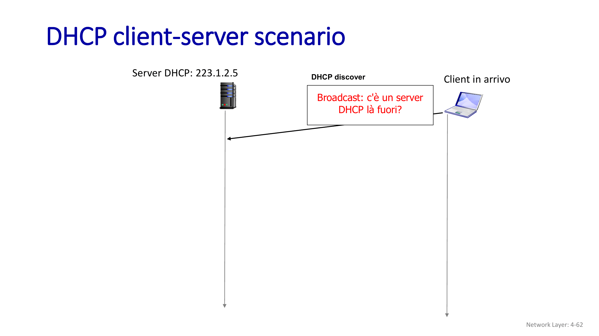 le chiamate vengono fatte in broadcast perché il client appena entrato non sa con chi sta parlando e il server DHCP non sa con chi sta parlando perché non ha ancora un IP
-
src: indica l’indirizzo IP e la porta UDP del mittente del messaggio. -
dest: indica l’indirizzo IP e la porta UDP del destinatario del messaggio. -
yiaddr: specifica l’indirizzo IP che il server DHCP assegna al client. -
transaction ID: identifica in modo univoco una sessione DHCP tra client e server. -
lifetime: definisce il tempo per cui il client può utilizzare l’indirizzo IP assegnato.
DHCP → IP e non solo
il DHCP non fornisce solo IP ma anche:
-
Indirizzo del router first-hop: specifica il gateway predefinito che il client userà per raggiungere altre reti.
- dice quale router usare per comunicare con altre reti esterne(gateway)
- Un gateway (in italiano: porta di accesso) è un dispositivo di rete che collega due reti diverse tra loro e instrada i dati da una rete all’altra.
-
Nome e indirizzo IP del server DNS: indica al client quali server DNS usare per risolvere i nomi di dominio.
-
Maschera di rete(subnet): definisce la parte dell’indirizzo IP che identifica la rete e quella che identifica l’host.
Altri esempi di DHCP
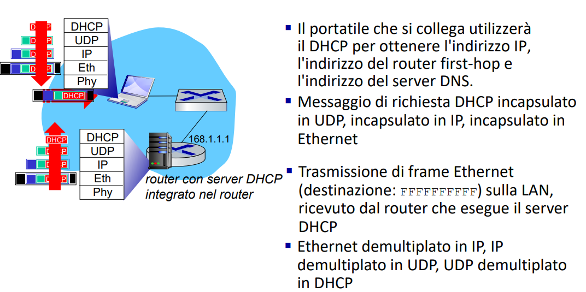 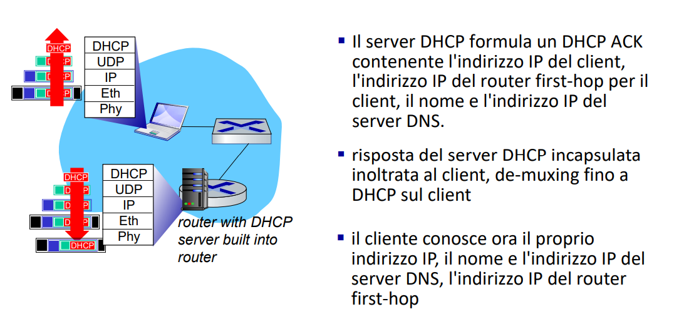
Rispondiamo alla seconda domanda
Come fa una rete a ottenere l’indirizzo IP (la parte dell’indirizzo relativa alla rete)? Qui parleremo di indirizzi pubblici su una rete ma diciamo che si applica la medesima cosa su indirizzi privati
- questi indirizzi sono forniti dagli ISP per identificare una rete( che altrimenti sarebbe privata) dall’esterno Dobbiamo immaginare come se l’ISP ha un grande blocco di indirizzi che dividerà per ogni rete che ne richiede un po’
✅ Esempio
L’ISP possiede un blocco grande di indirizzi:
200.23.16.0/20Questo significa che:- I primi 20 bit dell’indirizzo sono fissi → è la parte di rete.
- I restanti bit sono disponibili per la suddivisione:
- bit per la parte variabile.
- Quindi il blocco contiene indirizzi IP.
[ parte di rete ][ parte di host ]
/20 /12🔹 In quante sottoreti posso dividere questo blocco?
Se scelgo di suddividere in blocchi più piccoli:
- Passo da /20 a /23 → significa che tengo fissi 23 bit invece di 20.
- Quindi aggiungo 3 bit alla parte di rete. 👉 Con 3 bit in più, posso rappresentare combinazioni distinte.
🟢 Risultato:
Il blocco
200.23.16.0/20può essere suddiviso in 8 sotto-blocchi da /23
Ognuno con 512 indirizzi (, perché 32 − 23 = 9)
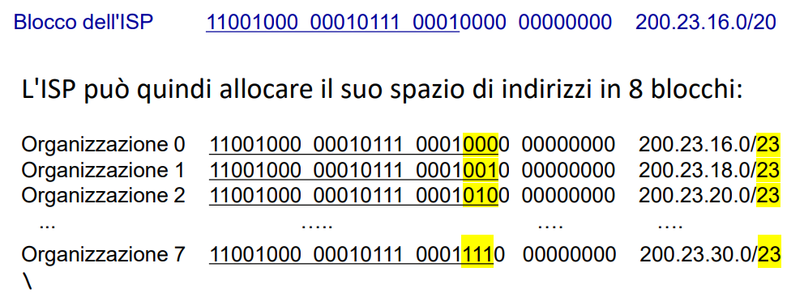
route aggregation
Ogni ISP o grande router su Internet deve pubblicizzare agli altri router quali indirizzi IP è in grado di raggiungere.
Questo lo fa con le tabelle di routing e i protocolli come BGP.
Supponiamo che Fly-By-Night-ISP(nome a caso di un ISP) abbia assegnato questi 8 blocchi a 8 clienti:
200.23.16.0/23200.23.18.0/23200.23.20.0/23- …
200.23.30.0/23Se volesse pubblicizzare ognuno singolarmente, dovrebbe inserire 8 righe distinte nella tabella di routing di Internet. Questo aumenta la dimensione e la complessità della tabella.- Invece di pubblicare ogni singolo blocco su Internet, Fly-By-Night-ISP dice:
“Inviatemi tutto ciò che ha un indirizzo che inizia con 200.23.16.0/20”
👉 Questo è indirizzamento gerarchico:
Tanti blocchi vicini (stessa radice binaria) sono aggregati in uno solo.
✅ Vantaggio:
- Riduzione della complessità nelle tabelle di routing a livello globale.
- Più efficienza nella gestione dei percorsi Internet.
è sufficiente dire 200.23.16.0/20 perché saranno i sistemi di rete con cui comunico a calcolare che il CIDR arriva fino a 200.23.31.255
👇 Facciamo il calcolo passo per passo:
- Inizio:
200.23.16.0
- È l’indirizzo di rete (tutti gli ultimi 12 bit a 0)
- Fine: si aggiungono indirizzi
- Ultimo indirizzo:
200.23.31.255(tutti gli ultimi 12 bit a 1) 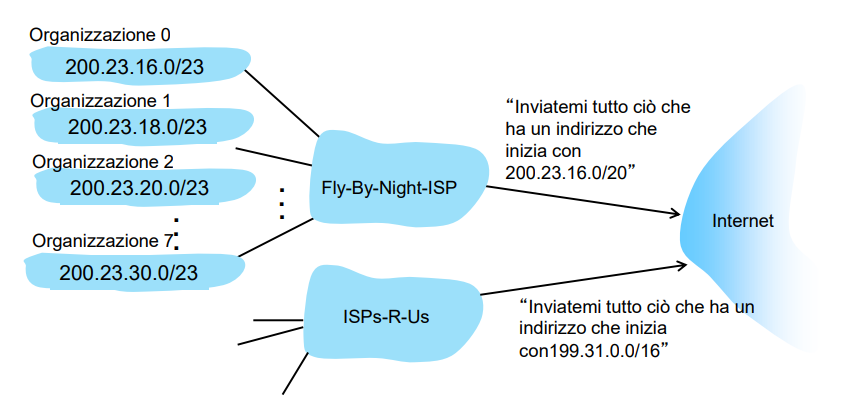
Cambio di percorsi
🔁 Scenario:
- Organizzazione 1 si sposta da Fly-By-Night-ISP a un altro ISP: ISPs-R-Us
- L’indirizzo IP di Organizzazione 1 rimane lo stesso:
200.23.18.0/23🧭 Cosa succede: - ISPs-R-Us ora deve pubblicizzare un percorso specifico per quell’indirizzo.
- Dice a Internet:
“Inviatemi tutto ciò che inizia con 199.31.0.0/16
oppure con 200.23.18.0/23” ← (questo è più specifico!)
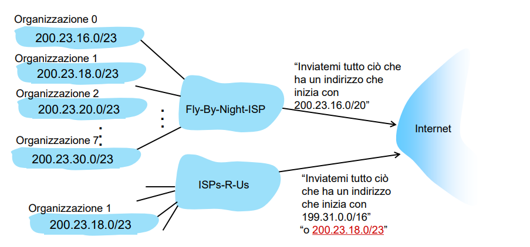
ricordiamo che se avviene una richiesta su un indirizzo più specifico
- essa viene soddisfatta da quello che ci assomiglia di più
- Anche se Fly-By-Night-ISP pubblicizza il blocco aggregato
200.23.16.0/20,
la rotta più specifica pubblicata da ISPs-R-Us viene preferita. 📍 Perché? - I router Internet scelgono sempre il percorso più specifico, se esiste.
- Quindi il traffico per
200.23.18.0/23andrà verso ISPs-R-Us,
nonostante Fly-By-Night-ISP continui a pubblicare il blocco/20. 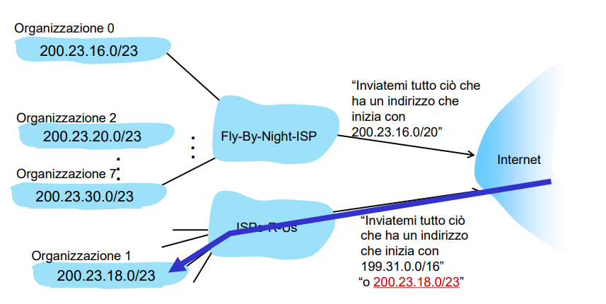
Ultime parole su questo argomenti degli indirizzi IP
rispondendo a delle domande
come fa un ISP a ottenere un blocco di indirizzi?
tramite ICANN
- ICANN (Internet Corporation for Assigned Names and Numbers) è l’organizzazione che gestisce l’assegnazione globale degli indirizzi IP.
- Non assegna direttamente agli ISP, ma lo fa tramite 5 Registri Regionali (RR):
- Esempi: RIPE (Europa), ARIN (Nord America), APNIC (Asia-Pacifico), ecc.
- I RR poi possono assegnare blocchi a registri locali o direttamente agli ISP.
🧠 Nota: ICANN gestisce anche il sistema DNS, inclusi i domini di primo livello (TLD) come
.com,.edu, ecc.
ci sono abbastanza indirizzi con IPv4?
no 32 bit sono pochi e sono già finiti nel 2011
- Per mitigare il problema, è stato introdotto il NAT (Network Address Translation), che permette a molte macchine private di condividere un solo IP pubblico.
- lo vedremo tra poco
- Ma la vera soluzione è il passaggio a IPv6, che usa indirizzi a 128 bit → tantissimi indirizzi disponibili (2¹²⁸).
NAT
sta per network address translation
 Serve per ridurre il numero di dispositivi che usano l’IPv4 pubblico(per l’esterno)
Serve per ridurre il numero di dispositivi che usano l’IPv4 pubblico(per l’esterno)
- ogni dispositivo ha un suo indirizzo privato
- tipo
10.0.0.1 - solo il router ha un indirizzo pubblico
- gli viene dato dall’ISP
- tutti i dispositivi quando si interfacciano con l’esterno usano lo stesso ip pubblico
- tutti i dispositivi non sono visibili dall’esterno(solo il router lo è)
- puoi cambiare ISP più facilmente
- tipo
Router di tipo NAT
Il Router di tipo NAT deve gestire meticolosamente la traduzione degli indirizzi IP per instradare i pacchetti correttamente
Quindi cosa deve fare esattamente il router quando un pacchetto esce dalla rete locale?
- sostituire l’indirizzo IP sorgente e il n. di porta sorgente di ogni datagramma in uscita con l’indirizzo IP pubblico del router NAT e il nuovo numero di porta che si affaccia all’esterno
- utilizzare una tabella di traduzione NAT per ricordare ogni coppia di traduzioni fatta
- Quando arriva una risposta da internet
- un pacchetto in entrata
- deve sostituire ad ogni pacchetto in entrata il datagramma corretto
- scambiando i vari indirizzi ip pubblici e la porta pubblica con i rispettivi privati
Esempio di router NAT
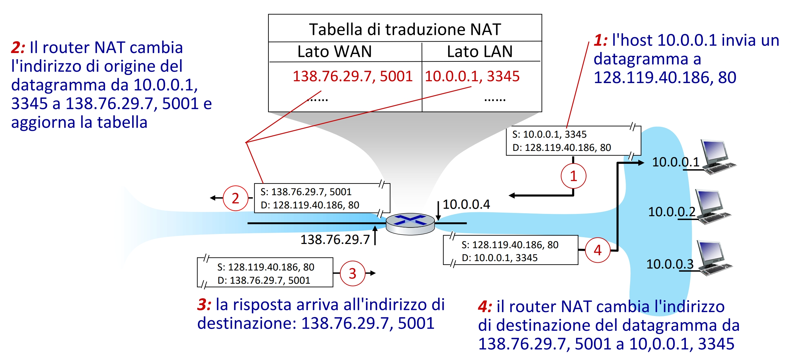 I vari step:
- Abbiamo un PC 10.0.0.1 che vuole accedere ad un sito web 128.119.40.186 sulla porta 80 (HTTP)
-
La rete locale ha IP privati come quello sopra
-
Il router ha UN SOLO IP pubblico
-
Serve il NAT per andare “su internet”
-
-
Il dispositivo 10.0.0.1:3345 (3345 è il numero di porta) invia un datagramma a 128.119.40.186, porta 80 (richiesta a server web)
-
Il router NAT traduce Da: 10.0.0.1:3345 A: 138.76.29.7:5001 Internet (tutto ciò che è esterno) penserà che il pacchetto venga da quest’ultimo
-
Arriva la risposta dal server server destinazione: 138.76.29.7:5001 (l’indirizzo IP pubblico visto prima)
-
Il router riconverte guarda nella tabella NAT e trova 138.76.29.7:5001 → 10.0.0.1:3345 Allora cambia l’indirizzo di destinazione e invia il pacchetto a 10.0.0.1:3345 che è PC giusto.
in poche parole traduce indirizzzi e porte e tiene traccia di tutti i movimenti di indirizzi attraverso quella tabella, facendo sembrare che sia tutto pubblico
Il router NAT in realtà
- dovrebbe arrivare fino al livello 3 IP di rete
- invece usa anche il livello 4 di trasporto TCP/UDP
- Il NAT è nato per ridurre l’uso di indirizzi IPv4
- ma ora esiste il 6
- rende le connessioni più complicate per questi scambi di indirizzzi
- difficile comunicare direttamente con chi è dietro il NAT è molto economico quindi ancora in uso
IPv6
nasce per i motivi detti prima:
- IPv4 insufficienti, avevano solo 32 bit
- più veloce da gestire questi 64
Datagramma IPv6
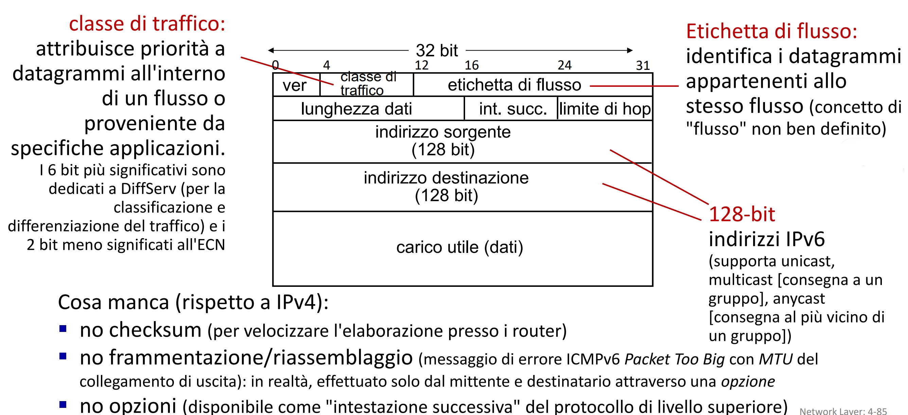 Campi principali:
- Versione (ver): sempre 6
- Classe di traffico: dà priorità ai datagrammi importanti
- Etichetta di flusso: per raggruppare datagrammi che fanno parte dello stesso “flusso”
- Indirizzo sorgente e destinazione: sono lunghi 128 bit (IPv4 era 32 bit)
- Carico utile (payload):pi dati veri e propri
Cosa manca in IPv6 rispetto a IPv4?
- No checksum, meno controllo ma router più veloci
- No frammentazione/riassemblaggio, se il pacchetto è troppo grande, il mittente viene avvisato e lo rimanda più piccolo
- No opzioni stanno da un’altra parte
Pacchetti destinati ad esempio lo streaming sono spesso etichettati con stesso “flusso”
aggiornare da IPv4 a IPv6 non è così semplice quindi ci sono router misti che sono degli ibridi tra le due cose
Tunneling e incapsulamento
Per comunicare in una rete mista si usa il tunneling dove:
- un pacchetto IPv6 viene inserito in un pacchetto IPv4(payload)
- così può viaggiare in IPv4
- poi un router IPv6 può spacchettarlo senza problemi 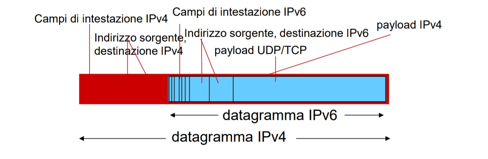
Esempio

- A ed E sono i router misti
- loro hanno il compito di impacchettare e spacchettare nei formati corretti
visione fisica del tunneling
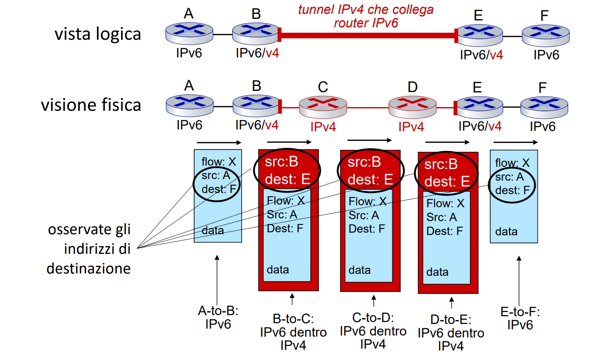
nella visione logica sembra che il pacchetto vada senza problemi da B a E Invece nella versione fisica fa vedere anche i vari router intermedi con i vari cambiamenti di indirizzo
Utilizzo di IPv6
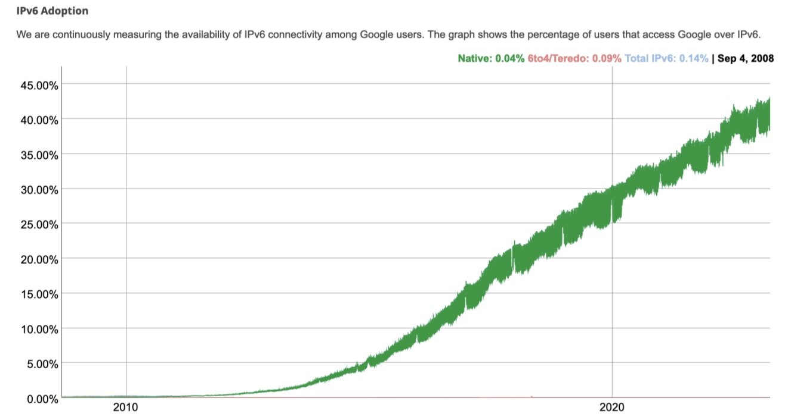 fa vedere quanto viene adottato IPv6 nel tempo
Match Plus Action(inoltro generalizzato)
una tabella di inoltro o dei flussi
- ogni router ne ha una, serve per capire a chi inoltrare il pacchetto
- con match plus action fa due tipi di inoltro:
- normale:
- fa un inoltro basato sulla destinazione guardando l’ip di destinazione e fa un inoltro verso il router giusto
- generalizzato: quando guarda anche altri campi dell’intestazione e può fare oltre all’inoltro anche ulteriori azioni
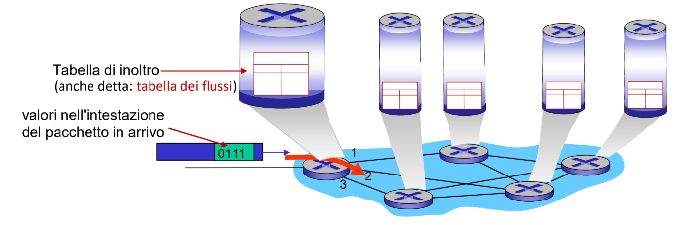
in questo esempio inoltra al router numero 3 perché abbiamo
0111
- normale:
- con match plus action fa due tipi di inoltro:
Tabella di inoltro o dei flussi
Un flusso è definito dai valori dei campi dell’intestazione nei pacchetti (a livello di collegamento, rete o trasporto), la tabella dei flussi contiene regole tipo “SE un pacchetto ha questi valori → ALLORA fai questa azione”.
Ogni router può prendere decisioni “semplici” per la gestione dei pacchetti seguendo quello che c’è scritto nella tabella dei flussi:
-
Match = “se il pacchetto ha questi valori…”
-
Action = allora puoi fare queste cose:
-
inoltrare (forward) il pacchetto su una certa porta;
- scartare (drop) il pacchetto;
- modificare (modify) l’intestazione;
- mandarlo al controller (se usi una rete SDN);
- copiarlo, loggarlo, contarne i byte, ecc… Esempio 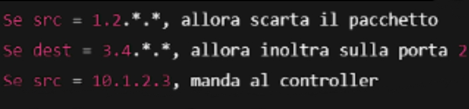
-
Se due tabelle si sovrappongono vince quella con priorità più alta
-
presenza di contatori che tengono conto di quanti inoltri hanno usato quella determinata regola, con anche timestamp
- praticamente sai anche a che ora è successo

Voci tabella dei flussi(Open Flow)
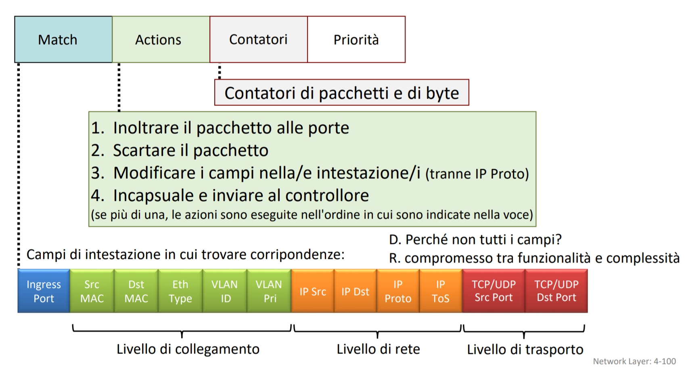 OpenFlow rappresenta uno standard usato nelle reti SDN(Software Defined Networking) La logica di controllo è separata dall’hardware invece di avere ogni router che decide da solo come inoltrare i vari pacchetti
- c’è un grande controller centrale che decide per tutti
- Open Flow è anche il nome del protocollo usato per far comunicare questo grande controller con i router Ogni riga è fatta da 4 parti principali:
- Match → cosa cercare nel pacchetto
- Actions → cosa fare se c’è corrispondenza
- Contatori → contano pacchetti e byte
- Priorità → serve se più regole combaciano con lo stesso pacchetto Continuo domani
1)Match
In pratica il router guarda l’intestazione del pacchetto alla ricerca di valori specifici. Questi campi che controlla sono divisi per livello (diversi strati del pacchetti): (Li riporto solo per dare un contesto a quello che vedo, li copio e incollo)
Livello 2 – Collegamento
Serve per decidere cosa fare dentro una rete locale (LAN)
- Ingress Port: Porta fisica dove è entrato il pacchetto
- Src MAC: MAC address sorgente
- Dst MAC: MAC address destinazione
- Eth Type: Tipo di protocollo (es. IPv4, IPv6, ARP…)
- VLAN ID: ID della VLAN
- VLAN Pri: Priorità della VLAN
Livello 3 – Rete
Campi per muoversi da una rete all’altra, serve ai router per inoltrare verso la destinazione corretta:
- IP Src: Indirizzo IP sorgente
- IP Dst: Indirizzo IP destinazione
- IP Proto: Protocollo IP (es. TCP, UDP, ICMP)
- IP ToS: Tipo di servizio (priorità pacchetto)
Livello 4 – Trasporto
Campi che servono per capire quale applicazione ha generato il pacchetto, distinguere tipo di traffico:
- TCP/UDP Src Port: Porta sorgente (es. 443)
- TCP/UDP Dst Port: Porta di destinazione (es. 80)
Altri esempi
Esempio 1
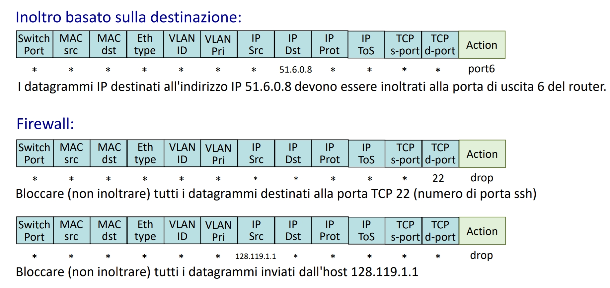
🔁 Inoltro basato sulla destinazione
Descrizione:
Se un pacchetto ha come IP di destinazione 51.6.0.8, allora deve essere inoltrato sulla porta 6 del router.
Regola:
IP Dest = 51.6.0.8- Tutti gli altri campi =
*(qualsiasi valore) Azione:
port6→ inoltra sulla porta 6
🔒 Bloccare SSH
Descrizione:
Blocca tutti i pacchetti destinati alla porta TCP 22 (usata per SSH).
Regola:
TCP Dst Port = 22- Tutti gli altri campi =
*Azione:
drop(scarta)
🚫 Bloccare un host specifico
Descrizione:
Blocca tutti i pacchetti inviati da 128.119.1.1.
Regola:
IP Src = 128.119.1.1- Tutti gli altri campi =
*
Azione:
drop
ESEMPIO 2
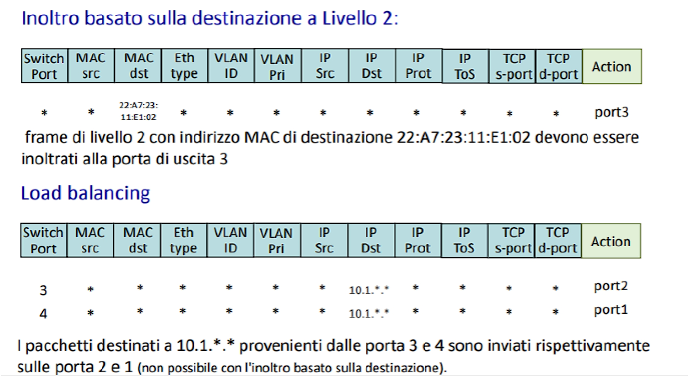
🎯 Inoltro basato su MAC di destinazione
Descrizione:
Se un pacchetto ha MAC di destinazione = 22:A7:23:11:E1:02, allora viene inoltrato sulla porta 3.
Regola:
MAC Dst = 22:A7:23:11:E1:02- Tutti gli altri campi =
*
Azione:
port3 → inoltra sulla porta 3
⚖️ Load Balancing
Descrizione:
Con il load balancing si distribuiscono i pacchetti destinati a 10.1.*.* e provenienti da porta 3 e 4 su porta 2 e 1.
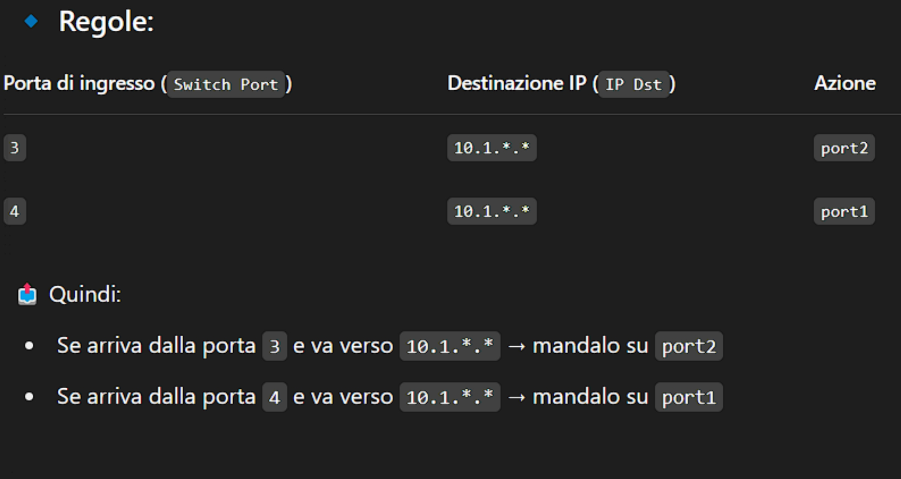
Questa cosa non si può fare con l’inoltro basato solo sulla destinazione IP (IP DST), perché andrebbero tutti sulla stessa porta.
Astrazione di Open Flow
Open Flow può comportarsi come diversi dispositivi (router, switch, firewall, NAT) in base al match + action
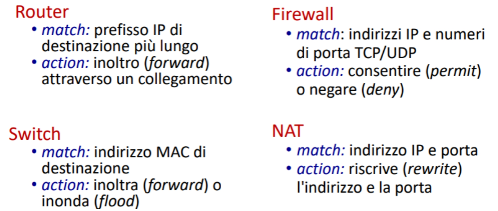
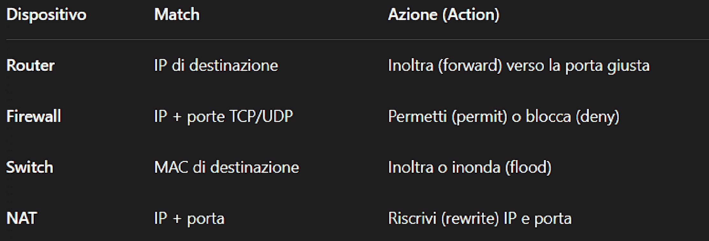
Esempio di rete Open Flow
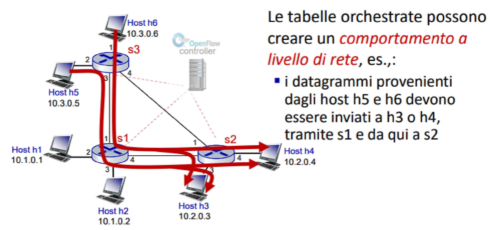
Questa rete ha
- 6 host (
da h1 a h6) - 3 switch (
s1,s2,s3) - 1 controller OF che controlla il tutto.
Il controller crea delle regole affinché:
- I pacchetti da h5 e h6 arrivino a h3 o h4
- Il traffico passi attraverso s1 e poi s2
Quello che succede è questo: 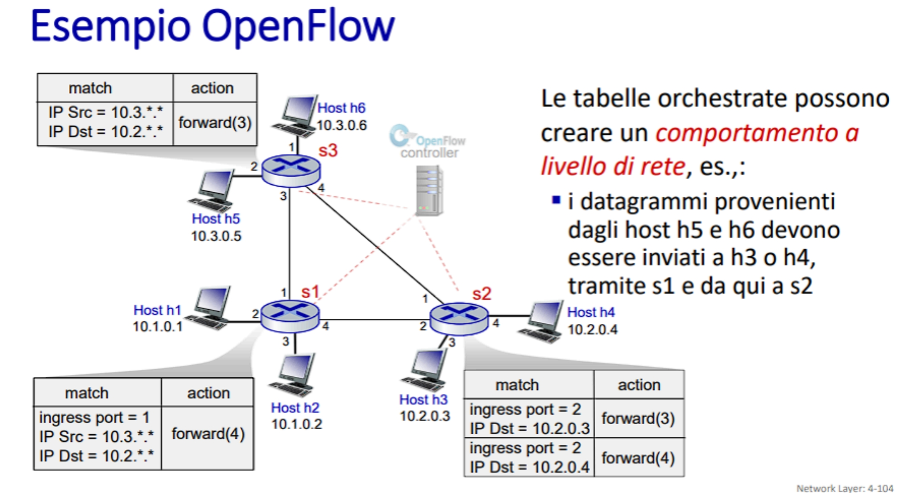
Spiegazione con i relativi match + action: 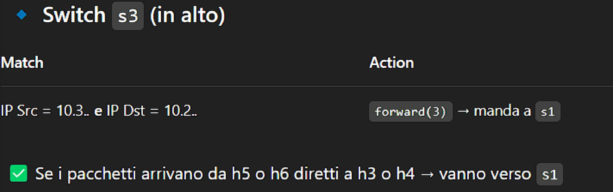 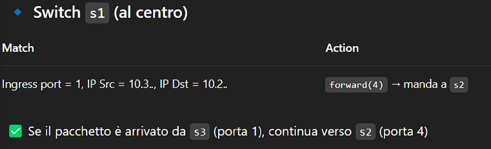 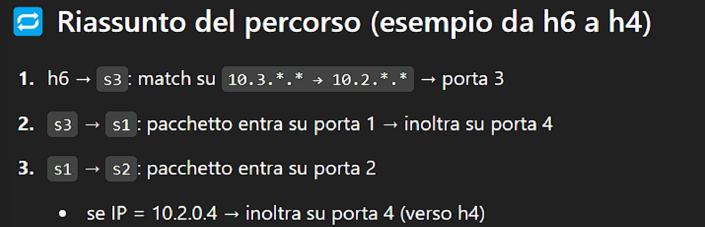
In sintesi, inoltro generalizzato perle
- Match + action?
- Controlla certi campi del pacchetto (match)
- Fai qualcosa se c’è corrispondenza (action)
- Cosa può fare un dispositivo OpenFlow?
- Guardare tutti i campi dell’intestazione di prima
- Decidere cosa fare (scarto, inoltro…)
- È utile perché può programmare il comportamento della rete, come fossero tanti dispositivi diversi
MIDDLEBOX
Cosa è e dove si trova? “Qualsiasi dispositivo intermedio nella rete che svolge funzioni diverse da quelle normali di un router IP” 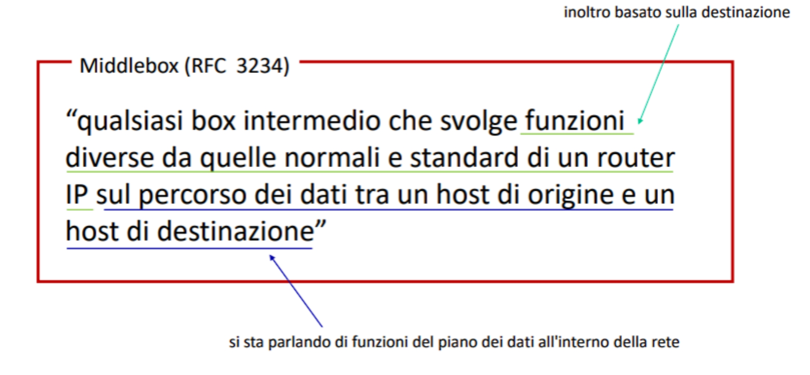 Non si limita ad inoltrare i pacchetti in base all’IP di destinazione (come un semplice router) ma fa anche altro.
Esempi di MB:
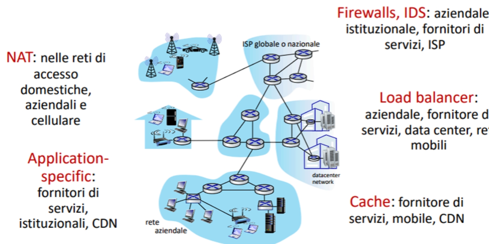
Evoluzione delle reti moderne (skip?)
All’inizio: hardware chiuso
Le reti usavano:
- Hardware proprietario (es. router Cisco, firewall Fortinet, ecc.)
- Tutto era bloccato: non si poteva modificare o programmare niente
- Le funzioni erano fisse e legate al dispositivo fisico
Passaggio a whitebox + API aperte
- Whitebox = hardware generico
- Con API (interfacce standard pubbliche) aperte tipo OpenFlow
- Si abbandona l’hardware proprietario
- Le azioni locali diventano programmabili con match + action
- L’intelligenza si sposta nel software (è lì che innovi)
- Il controller SDN è centrale e dice a tutti cosa fare
NFV – Network Functions Virtualization
- Porta le funzioni di rete nel software che non sono più legate all’hardware
- Invece di avere un firewall fisico si usa un software firewall su un server
- Funziona su hardware generico (COTS = “commerciale standard”)
Può girare su:
- una macchina virtuale (VM)
- un container
- anche nel cloud
Le funzioni virtualizzate:
- router
- firewall
- switch
- NAT
- load balancer
- ecc.
Cosa cambia tra le due?
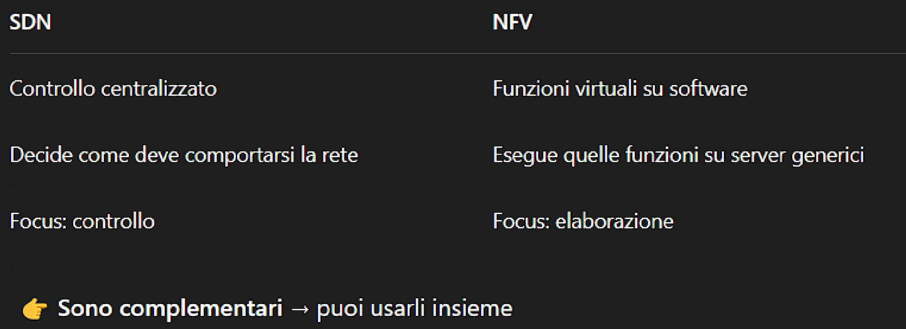
La clessidra IP
In passato:
- Tanti protocolli di applicazione, trasporto, collegamento e fisico
- Solo uno a livello di rete → tutti i dispositivi in Internet lo devono supportare 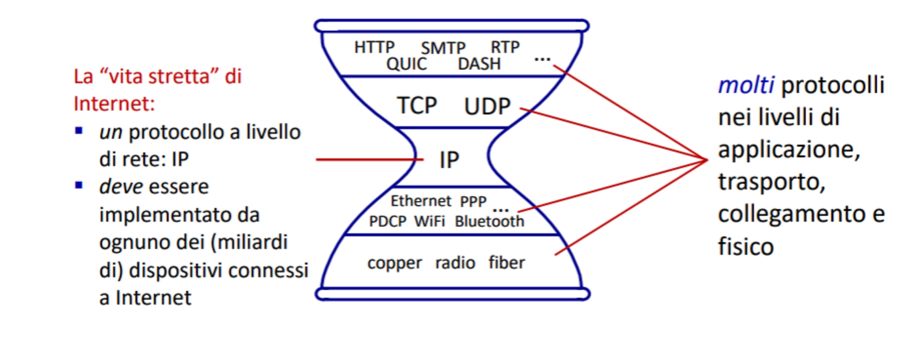
Con il passare degli anni:
- Sono spuntati nuovi elementi dentro il livello IP (middlebox)
- Più complicata ma molto più scalabile 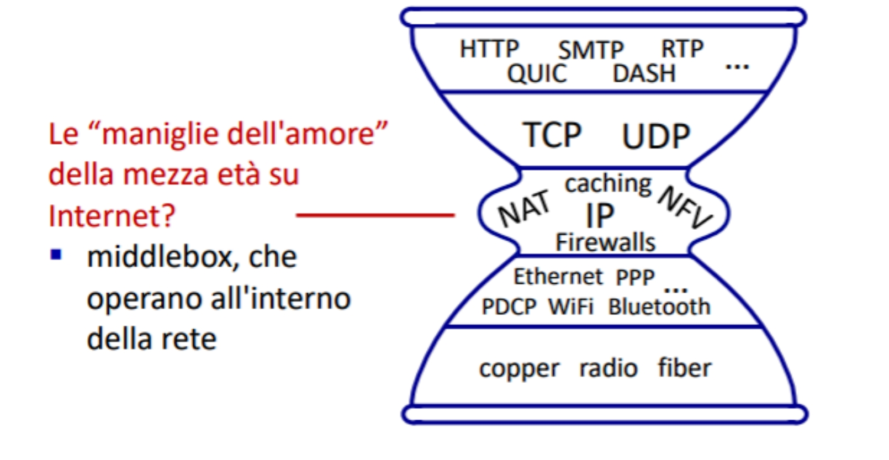
Principi architetturali di Internet
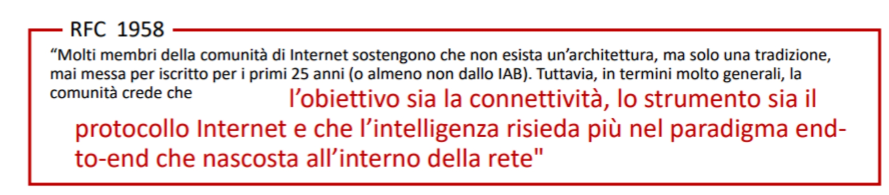
- La rete centrale (router, switch) fa solo passaggio pacchetti
- La logica e la complessità (es. controllo errori, sicurezza, affidabilità) sono fatte dai dispositivi agli estremi (host di partenza e di arrivo)
Tre idee chiave della filosofia Internet:
- Connettività semplice, trasferimento grezzo di pacchetti da A a B
- Protocollo IP come base, il “collo stretto” della clessidra, maschera la complessità dei livelli sotto
- L’intelligenza è ai bordi della rete, è lì che si fanno cose complesse: app, sicurezza, controlli, logiche
End to End
- “Alcune funzioni (come affidabilità o controllo errori) è meglio metterle negli host, non dentro la rete”
- Solo host A e B gestiscono cose complesse
- I router trasportano e basta
- Es: TCP fa il controllo errori tra gli host
Hop-by-hop
- Ogni nodo intermedio (router) si occupa di garantire il trasferimento
- Ogni tratto della rete deve essere “intelligente” 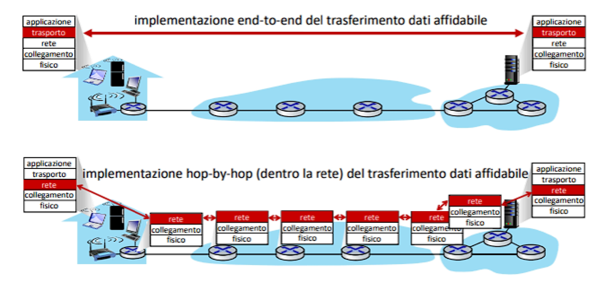
Perché Internet ha scelto end-to-end?
- Più semplice: la rete è più stupida = più economica, più scalabile
- Più robusta: se un nodo inter 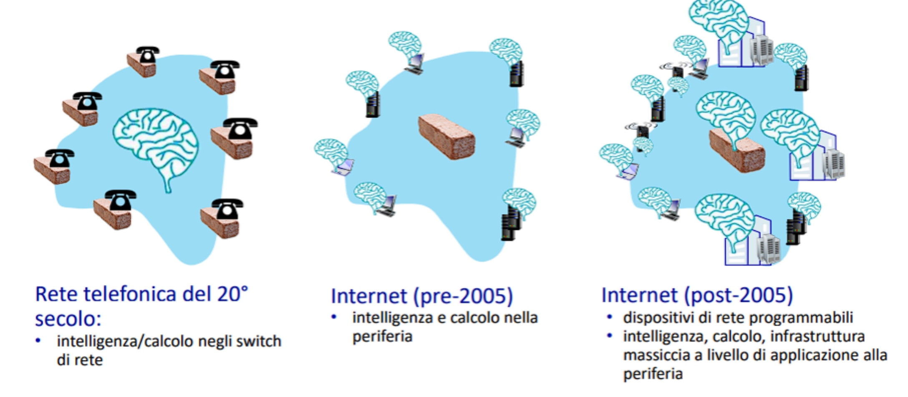